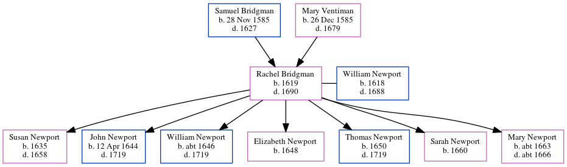

Rachel Newport (née Bridgman) 1619 - 1690
[ Home ] | [ Calendar ] | [ Surnames Index ] | [ Errors ] | [ Family History ]The child of Samuel Bridgman and Mary Ventiman, Rachel Bridgman, the 8 times great-grandmother of Nigel Horne, was born in Petham, Kent, England in 1619, was baptised there on 1 Jan 1620 and married William Newport (with whom she had 7 children: Susan, John, William, Elizabeth, Thomas, Sarah and Mary) in St Mildreds, Canterbury, Kent, England on 25 Jan 16431.
She died in 1690 in Waltham, Kent, England.
Parents
- Samuel was born on 28 Nov 1585
- Mary was born on 26 Dec 1585
Children
- Susan was born in 1635
- John was born on 12 Apr 1644
- William was born c. 1646
- Elizabeth was born in 1648
- Thomas was born in 1650
- Sarah was born in 1660
- Mary was born c. 1663
Citations
- Public Member Trees Online publication - Provo, UT, USA: The Generations Network, Inc., 2006.Original data - Family trees submitted by Ancestry members.Original data: Family trees submitted by Ancestry members.
Family Tree
Map
Generated by ged2site. Last updated on Jul 3, 2024
Known Issues
Birth date (1619) has no citations
Death date (1690) has no citations